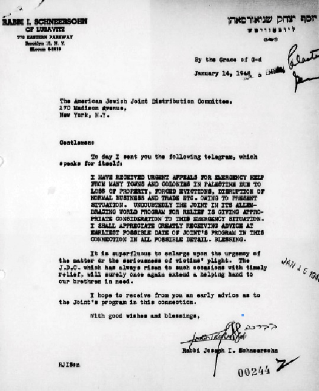

היום שלחתי לכם את המברק הבא, אשר מדבר בעד עצמו:
פרסום ראשון: מברק ומכתב של אדמו”ר הריי”צ אל ארגון הג’וינט לבקש עזרה עבור תושבי ארץ ישראל הסובלים בעת מלחמת השחרור, ומענה ראשי הג’וינט לפנייה זו
פרסום ראשון: מברק ומכתב של אדמו”ר הריי”צ אל ארגון הג’וינט לבקש עזרה עבור תושבי ארץ ישראל הסובלים בעת מלחמת השחרור, ומענה ראשי הג’וינט לפנייה זו

מסמכים מרתקים אלה מופיעים בארכיון הג’וינט (שעבר דיגיטציה ועלה על האינטרנט הודות למענק מד”ר ג’ורג’ט בנט וד”ר ליאונרד פולונסקי). רוב המסמכים בתרגום מאנגלית.
פניות דחופות לסיוע
ביום ג’ שבט תש”ח שלח אדמו”ר הריי”צ מברק דחוף לג’וינט, ובו ביום שלח גם מכתב ובו העתק המברק:
היום שלחתי לכם את המברק הבא, אשר מדבר בעד עצמו:
קיבלתי פניות דחופות לסיוע חירום מערים רבות ומושבות בפלסטין כתוצאה מאובדן רכוש, פינוי כפוי, שיבוש האפשרות לעבוד, מסחר וכו’ בגלל המצב הנוכחי. אין ספק שארגון הג’וינט בתוכנית הסיוע חובקת–עולם לוקחים זאת בחשבון ונותנים את המחשבה הראויה למצב חירום זה. אעריך מאוד לקבל מכם הודעה על פעולות הג’וינט בנושא זה בכל פרט אפשרי. בברכה.
למותר להרחיב על דחיפות העניין או רצינות מצוקת הקורבנות. הג’וינט אשר תמיד התעלה לעזור במקרים כאלה בזמן, בוודאי ישוב להושיט יד לעזרת אחינו הנצרכים.
אני מקווה לקבל מכם הודעה בהקדם אודות תוכנית הג’וינט בהקשר זה.
באיחולים ובברכה
יוסף יצחק שניאורסאהן
עניי אירופה קודמים
ביום ט’ שבט תש”ח, שלח מר משה לוויט, סגן יו”ר הג’וינט, מכתב תגובה ארוך לאדמו”ר הריי”צ ובו פירט את מדיניות הג’וינט בעניין זה:
מאשרים אנו קבלת המברק והמכתב שלך מיום ה–14 בינואר עם התייחסות לפניות הדחופות לעזרה שקבלת מערים ומושבות בפלסטין.
בנוגע לקביעתך “אין ספק שארגון הג’וינט בתוכנית הסיוע חובקת–עולם לוקחים זאת בחשבון ונותנים את המחשבה הראויה למצב חירום זה בפלסטין”, אנחנו בטוחים שאתה יודע כי הג’וינט מקבל כספים מן המגבית היהודית המאוחדת. המגבית היהודית המאוחדת גם מגייסת כספים עבור המגבית המאוחדת לפלסטין, כמו גם עבור ארגון עזרה למהגרים לאמריקה. תחום העבודה המתמודד עם הצרכים בפלסטין הוא בדרך כלל בתחום השיפוט של המגבית המאוחדת לפלסטין. הג’וינט עוסק בבעיות שמשפיעות על יהודים בשאר העולם למעט ארצות הברית.
מאחר והמגבית המאוחדת לפלסטין מקבלת חלק מאוד משמעותי מההכנסה של המגבית היהודית המאוחדת, עמדתה הכללית של הג’וינט היא, שככל שהדבר אפשרי, בעיות הקשורות לדרישות והצרכים של היהודים בפלסטין הינם באחריות המגבית המאוחדת לפלסטין. כמובן שיש לנו יוצאים מן הכלל. וכפי שאתה יודע, ארגון הג’וינט במשך שנים רבות הגיש סיוע לישיבות ומוסדות דתיים–חינוך אחרים בפלסטין … באופן כללי בעיות הקשורות למעמד העולים בפלסטין, ישובם והסתגלותם, סיוע כלכלי, טיפול בילדים, שירותים רפואיים וכו’, לאחר שהם הגיעו לפלסטין, הם בתחום פעילות הקבוצות השונות המתרימות עבור פלסטין, בעיקר המגבית המאוחדת לפלסטין.
אין אנו צריכים לומר לכם שהצרכים של עמנו במדינות אירופה ובחלקים אחרים של העולם, שאין להם אף אחד אחר למי לפנות לקבלת סיוע חוץ הג’וינט, הם הרבה יותר מההכספים העומדים לרשותנו. בנסיבות אלו, על אף העניין העמוק שלנו והאהדה הרבה לאחינו בפלסטין, במיוחד במצב הנוכחי שלהם, הג’וינט אינו בעמדה לקחת על עצמו שום אחריות נוספת בחלק זה של העולם.
בהערכה על ההתעניינות שלך ועל איחוליך, האמן לי,